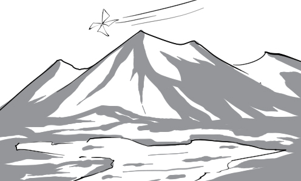
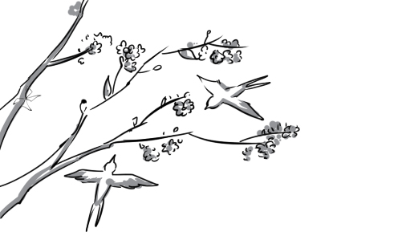
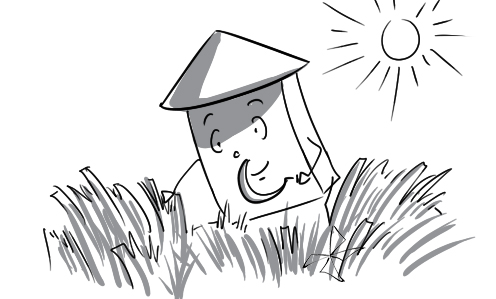

1.
ache: Eating strange snack on the street, Tom has a serious ache.
(cơn đau) n
2.
acoustic: We should learn about acoustic properties of the flute to understand how it works.
(thuộc âm thanh) adj
3.
activation: The terrorist controlled the activation of the bomb from afar.
(sự kích hoạt) n
4.
adaptability: Tom is very healthy, that’s why his adaptability to the weather is great.
(khả năng thích nghi) n
5.
adjacent: 10 and 11 are adjacent numbers.
(kề bên) adj
6.
adolescent: The adolescent boy loves to ride his scooter on the street.
(vị thành niên) adj
7.
alignment: Students’ alignment makes the school yard orderly.
(sự sắp thẳng hàng) n
8.
amid: Standing amid two big bullies, Tom feels a little scared.
(giữa) prep
9.
archive: All employees information is stored in company’s archive.
(tư liệu lưu trữ) n
10.
assume: Henry assumes that it will rain, so he brings an umbrella.
(nghĩ rằng, cho rằng) v
11.
authentic: She has a very expensive bag made of authentic leather.
(thật) adj
12.
azure: The clear azure sky on a sunny day is so beautiful.
(xanh da trời) adj
13.
bald: His dog was bald because he didn't feed him with proper food.
(hói, trụi lông) adj
14.
bandage: Peter doesn't know how to apply a head scalp bandage.
(băng vết thương) n
15.
befriend: Johnny approached and befriended a beautiful girl.
(kết bạn) v
16.
bind: Harry bound up the burglar with rope.
(trói, buộc) v
17.
birthmark: Peter has a large birthmark on his left cheek.
(vết bớt) n
18.
bizarre: Everyone makes fun of her bizarre hairstyle.
(quái lạ) adj
19.
bone: The dog is digging a hole in the ground to bury a big bone.
(xương) n
20.
brand: They brand the “sale” mark on old products.
(dán nhãn) v
21.
cease: Peter just ceased to eating when he ran out of food.
(dừng lại, hết) v
22.
cemetery: Jimmy came to the cemetery at night to prove his bravery.
(nghĩa trang) n
23.
circle: Peter surely couldn't compete with fishermen from professional fishing circles.
(nhóm, giới) n
24.
clumsiness: Peter trips all the time because of his clumsiness.
(sự hậu đậu, vụng về) n
25.
collaborate: Mr. Jackson agreed to collaborate with me on this project.
(hợp tác) v
26.
comeback: Superman made his comeback after disappearing for a long time.
(sự trở lại) n
27.
compress: Peter folded his shirt and compressed it into a small bag.
(ép, nén, đè) v
28.
concrete: The police has a concrete evidence to catch the thief.
(cụ thể, rõ ràng) adj
29.
consistently: Consistently, Henry eats the same dish everyday.
(một cách kiên định) adv
30.
database: He is browsing the database to look for the document he needs.
(cơ sở dữ liệu) n
31.
decorate: The soldier was decorated for his glorious feat of arms.
(tặng thưởng huân chương) v
32.
densely: Land mines were densely buried in the earth to prevent the enemy from getting in.
(dày đặc) adv
33.
depict: His paintings depict the beauty of Vietnamese women.
(miêu tả) v
34.
derive: Tommy derived great pleasure from play video games.
(lấy được từ) v
35.
devote: These soldiers devote their lives to maintain peace in this country.
(cống hiến) v
36.
diversity: Customers are confused by the diversity of products in this mall.
(sự đa dạng) n
37.
dominant: Jimmy has a dominant position in his class thanks to his big size.
(nổi trội hơn) adj
38.
elite: They welcome their elite class customers very formally.
(ưu tú, cao cấp) adj
39.
embark: Peter embarked on a new career, hoping that he would one day be successful.
(khởi đầu) v
40.
emerge: The submarine suddenly emerged from the sea, which made fishermen startle.
(nổi lên, hiện lên) v
41.
enormous: The enormous man came to the city and destroyed everything on his way.
(khổng lồ) adj
42.
equip: The soldiers are equipped with a lot of modern weapons.
(trang bị) v
43.
facet: Henry is a perfect husband in every facet.
(phương diện) n
44.
feasible: David is very clever. He can finish even the least feasible task.
(khả thi) adj
45.
filter: My mother uses a grit screen to filter out most of the grits in the rice.
(lọc) v
46.
flexibility: David is content with the flexibility of his working arrangement.
(sự linh hoạt) n
47.
flock: Mr. McDonald is rounding up the flock of geese.
(bầy, đàn) n
48.
glacier: Everyone is amazed by the grandiosity of the glacier.
(sông băng) n

49.
gesture: Peter gestured his friend towards the living room.
(ra hiệu) v
50.
grid: The U.S. power transmission grid consists of about 300,000 km of lines.
(hệ thống đường dây) n
51.
hatch: The eggs hatched into baby chickens.
(nở ra, sinh ra) v
52.
heap: There is a big heap of rubbish in the backyard.
(đống) n
53.
hijack: The plane was hijacked by an armed terrorist.
(cướp máy bay) v
54.
humanitarian: A group of humanitarians donated food and essential supplies to the homeless.
(người theo chủ nghĩa nhân đạo) n
55.
immortality: This man has immortality, which is why no one can kill him.
(bất tử) n
56.
immune: Peter is immune to this disease while others are dying from it.
(miễn dịch) adj
57.
impending: No one has enough time to avoid the impending disaster.
(sắp xảy ra) adj
58.
incentive: High salary is a big incentive to employees’ effort.
(động cơ) n
59.
initiate: Peter initiated his career as a CEO at his father's enterprise.
(bắt đầu) v
60.
insight: The customer insight shows that they have many questions about English. We build website EEZY to answer them all.
(sự hiểu biết sâu sắc) n
61.
longevity: A healthy lifestyle is responsible for the remarkable longevity of my grandfather.
(sự trường thọ) n
62.
manageable: These children are very manageable thanks to their disciplinary parents.
(có thể quản lý) adj
63.
manipulate: Teenagers are easily manipulated by their friends because they don’t have strong will.
(thao túng) v
64.
manual: You should read the manual before playing this video game.
(tài liệu hướng dẫn) n
65.
marine: They sell fresh marine fish on the seashore.
(thuộc về biển) adj
66.
masterpiece: The Statue of Liberty is a masterpiece of the French sculptor Frédéric Bartholdi.
(kiệt tác) n
67.
measure: Peter is learning about the measures of his country.
(đạo luật) n
68.
milestone: Mr. Jackson considers 2011 as a milestone in his career.
(cột mốc quan trọng) n
69.
newfound: The newfound dinosaur skeleton attracts many viewers.
(vừa tìm thấy) adj
70.
obesity: There are more and more children having obesity in the US.
(chứng béo phì) n
71.
onset: Apricot blossom and lovely birds signal the onset of spring.
(sự bắt đầu) n

72.
originate: This river is originated up in the mountains.
(bắt nguồn từ) v
73.
painstaking: Peter is a painstaking man. He always prepares his luggage carefully before every trip.
(cẩn thận) adj
74.
pale: My T-shirt’s color becomes pale after being washed.
(nhạt màu) adj
75.
paralyze: The doctor became paralyzed after the mentally ill patient injected him with an anaesthetic.
(làm tê liệt) v
76.
particle: We cannot see particles with the naked eye.
(hạt vi mô) n
77.
pasture: This rich pasture is perfect for feeding cattle.
(cánh đồng cỏ) n
78.
peasant: Peasants are working very hard on the wheat field.
(nông dân) n

79.
pebble: There are many pebbles lying at the bottom of the stream.
(hòn sỏi) n

80.
pinpoint: The witness immediately pinpointed the real murderer.
(xác định rõ) v
81.
ponder: Peter pondered which birthday gift he should give his girlfriend.
(suy nghĩ, cân nhắc) v
82.
procedure: You should accomplish your check-in procedure at least 30 minutes before departure.
(thủ tục) n
83.
proverb: Nước đến chân mới nhảy is a familiar Vietnamese proverb.
(tục ngữ) n
84.
raw: It is amazing how they turn raw clay into such beautiful vases.
(thô, chưa tinh chế) adj
85.
rehearse: The actors are rehearsing the fighting scene.
(diễn tập) v
86.
relative: Beauty is relative; we find people we love more attractive.
(tương đối) adj
87.
ripple: The ripples are spreading softly across the river.
(gợn sóng) n
88.
risk: Tightrope walking at a great height is too much of a risk.
(nguy cơ, rủi ro) n
89.
route: Peter are showing me the route from London to Manchester.
(tuyến đường) n

90.
routine: Mr. Green's morning routine starts with brushing his teeth and then having a healthy breakfast.
(lề thói hằng ngày) n
91.
rush: David has to rush to work because he overslept.
(đi vội vã) v
92.
scarce: Girls are so scarce in technology classes.
(khan hiếm) adj
93.
secure: This briefcase can effectively secure the documents inside against theft.
(bảo vệ, bảo đảm) v
94.
shack: This shack is where the lumbermen sleep at night.
(căn lều) n
95.
shrink: Peter shrinks to the size of a bug after drinking the magic water.
(co lại, rút lại) v
96.
skim: It looks like they are skimming across the ground with their skateboards.
(lướt qua) v
97.
slip: The boy screams excitedly while slipping down the slide.
(trượt, tuột) v
98.
status: Mr. Henry has a high status in this enterprise.
(vị thế) n
99.
stimulate: Alcohol seemed to stimulate his craziness. He starts to sing very loudly now.
(kích thích) v
100.
strenuous: Peter made strenuous efforts to finish this project on time.
(hăng hái, làm cố gắng) adj